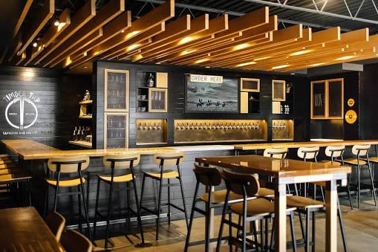
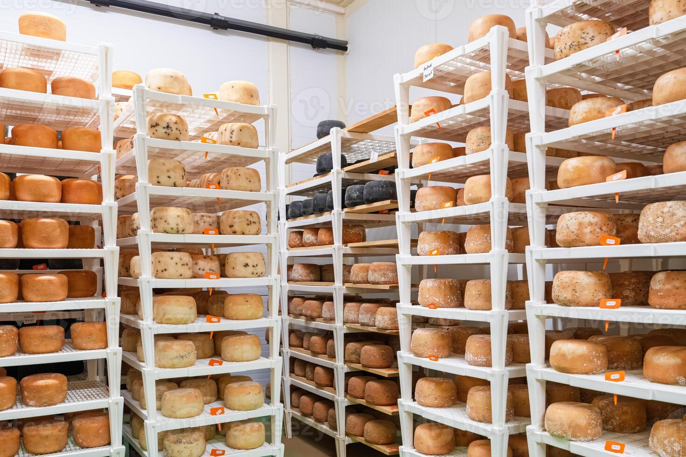
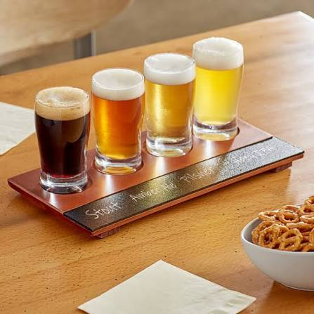
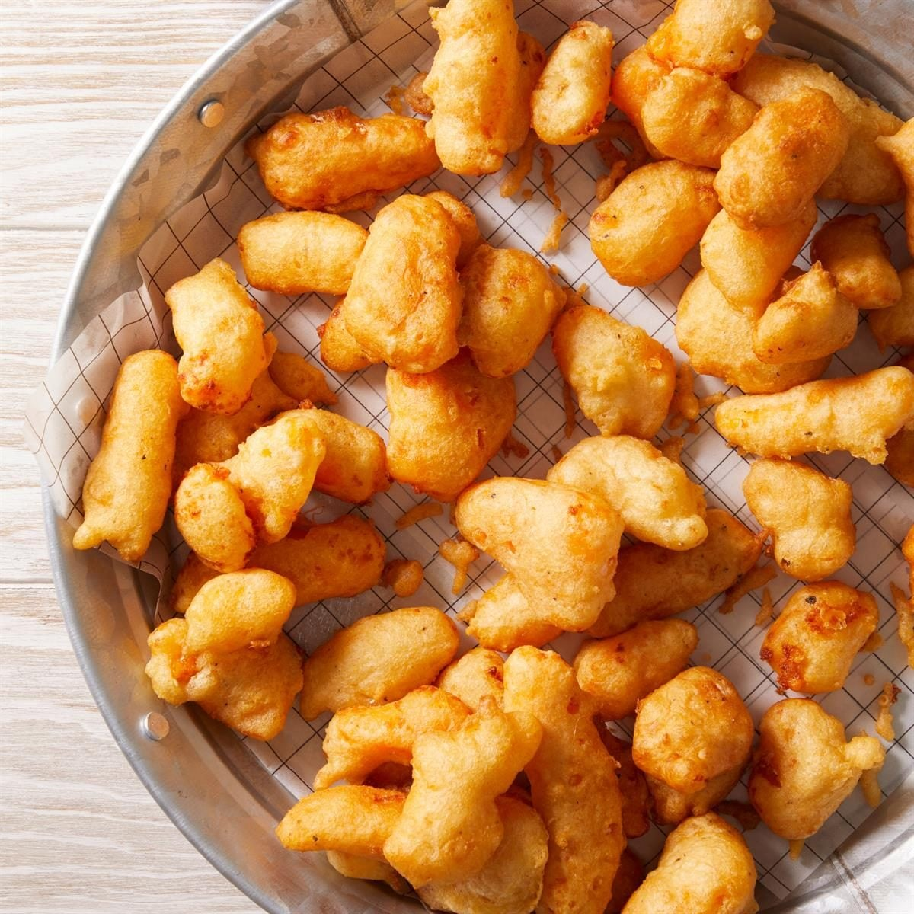

Browse examples of the spaces, foods, and beverages
that inspire this Wisconsin trail project.
These photos illustrate the theme and do not depict
the fictional businesses in our trail guide.
Brewery Taprooms

Taprooms offer a place to gather and learn about brewing.
Artisan Cheese

Cheese selections can range from fresh varieties
to carefully aged wheels.
Beer Flights

A tasting flight presents several beer styles
in small servings for adults age 21 and older.
Cheese Curds

Fried cheese curds are a savory addition to a food-focused visit.